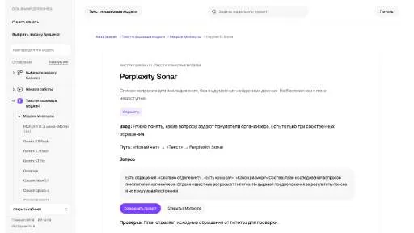

p
prolific.comДанные и аналитика
Для «prolific.com» сначала определите свою задачу и требуемый результат. Карточка относится к направлению «Данные и аналитика».
Раздел «Поиск информации»: варианты ИИ для этой задачи, описания возможностей и переходы к обзорам. Сравните несколько решений на одинаковом примере.
Опишите вопрос и сведения, которые уже известны, чтобы подготовить план исследования. Инструкция Perplexity Sonar в Молекуле показывает вопросы и гипотезы; это подготовка поиска, а найденные материалы и их достоверность нужно проверить отдельно, без вымышленных ссылок.
Подготовь план исследования вопросов покупателей о хранении книг. Есть только мои обращения клиентов. Раздели известное и гипотезы, укажи направления поиска. Не выдавай предположения за найденные данные и не придумывай ссылки.

Для «prolific.com» сначала определите свою задачу и требуемый результат. Карточка относится к направлению «Данные и аналитика».
Сравнивать «Similar Songs Finder» с другими инструментами раздела «Создание музыки» удобнее на одинаковом исходном материале.
Txyz AI помогает искать научные материалы обычными текстовыми запросами, выделять сведения из статей и получать рекомендации по дальнейшему чтению. Для исследования задайте узкую тему и критерии отбора. Затем проверьте, соответствует ли найденная работа вопросу и подтверждается ли пересказ её условиями, методикой и результатами.
Для «Walles AI» сначала определите свою задачу и требуемый результат. Карточка относится к направлению «ИИ-ассистент».
Для «AI Scout» сначала определите свою задачу и требуемый результат. Карточка относится к направлению «Поиск информации».
В инструменте «AIaDventures» можно готовить учебный материал и объяснения.
«AIreelity» помогает подготовить маршрут поездки.
«Ask Corpora» разбирает содержимое документов. Дополнительно «Ask Corpora» помогает организовать работу с базой знаний.
Сравнивать «Astral Labs» с другими инструментами раздела «Переводы» удобнее на одинаковом исходном материале.
Сравнивать «Brainwashd» с другими инструментами раздела «Анализ данных» удобнее на одинаковом исходном материале.

Chatbase помогает создать агента, который отвечает по материалам организации. Помимо текстов базы знаний важно определить границы допустимых ответов и действий.
ChatINFO предоставляет разговорный интерфейс и средства генерации текстов прямо в браузере. Среди задач есть статьи и сочинения, рерайт и проверка написания. Помощь с кодом и творческими материалами дополняет набор инструментов российского сервиса для работы с письменным содержанием пользователя.
«Coral AI» выделяет основные положения материала.
Elicit помогает искать научные работы, выделять сведения из публикаций и организовывать исследовательские материалы. Для полезного обзора сначала задайте вопрос и критерии отбора, затем сверяйте полученные выводы с методикой и ограничениями каждой статьи.
Для «Explainia» сначала определите свою задачу и требуемый результат. Карточка относится к направлению «Образование».
«Globe Explorer» помогает представить данные на диаграмме.
Сравнивать «Hint» с другими инструментами раздела «ИИ-ассистент» удобнее на одинаковом исходном материале.
Для «Infranodus» сначала определите свою задачу и требуемый результат. Карточка относится к направлению «Анализ данных».
Сравнивать «Lateral.io» с другими инструментами раздела «Поиск информации» удобнее на одинаковом исходном материале.
NewsDeck from OneSub собирает текущие новости из разных издательств и применяет ИИ к чтению материала. Пользователь может настроить отбор публикаций и анализировать статьи. Сервис предназначен для работы с новостным потоком: получения сообщений о событиях и выбора нужного содержания среди источников.
Для «Prospect AI» сначала определите свою задачу и требуемый результат. Карточка относится к направлению «Поиск информации».
«Shortify» представлен в разделе «Суммаризация». При выборе проверьте нужную операцию и условия работы с результатом.
Сравнивать «Sniper Search» с другими инструментами раздела «Бизнес» удобнее на одинаковом исходном материале.
«TopAI.tools» помогает находить материалы по вопросу.
Для «YOMO AI» сначала определите свою задачу и требуемый результат. Карточка относится к направлению «Данные и аналитика».
You.com предоставляет поиск и извлечение веб-материалов через API для ИИ-приложений. Разные интерфейсы возвращают результаты поиска, содержание страниц или ответ с источниками для дальнейшей обработки.
«AILYZE» преобразует речевую запись в письменный материал.
Для «Aomni» сначала определите свою задачу и требуемый результат. Карточка относится к направлению «Бизнес».
Сравнивать «BrainyPDF» с другими инструментами раздела «Чат-боты и ассистенты» удобнее на одинаковом исходном материале.
Сравнивать «Dr. Lambda» с другими инструментами раздела «Создание контента» удобнее на одинаковом исходном материале.
«GPT Finder» представлен в разделе «Поиск информации». При выборе проверьте нужную операцию и условия работы с результатом.
«Imaiger» готовит визуальные материалы по заданию.
Сравнивать «iNCSAI List» с другими инструментами раздела «Поиск информации» удобнее на одинаковом исходном материале.
«Islam AI» представлен в разделе «Образование». При выборе проверьте нужную операцию и условия работы с результатом.
Сравнивать «Konjer» с другими инструментами раздела «Чат-боты и ассистенты» удобнее на одинаковом исходном материале.
MedLabReport готовит персональное пояснение к результатам медицинских обследований. ИИ-инструмент анализирует разные типы результатов и отправляет отчёт на почту пользователя. Сценарий сосредоточен на письменном разборе предоставленного материала, когда сведения обследования преобразуются в индивидуальное изложение и доставляются по электронному почтовому каналу.
MyLens AI извлекает информацию из документов и представляет её в форме интеллект-карт. Продукт предназначен для учебной, исследовательской и деловой работы с материалами. Основной сценарий связан с выделением содержательных связей: исходный документ становится основой схемы, по которой можно обсуждать структуру темы и возвращаться к отдельным сведениям.
«Socrates» разбирает содержимое документов.
«Speak Ai (speakai.co)» преобразует речевую запись в письменный материал. «Speak Ai (speakai.co)» также разбирает данные для рабочего анализа.
«waldo.fyi» представлен в разделе «Анализ данных». При выборе проверьте нужную операцию и условия работы с результатом.
«Alfred (alfredsearch.com)» готовит текстовый черновик по условиям задачи. Дополнительно «Alfred (alfredsearch.com)» помогает составить сказочный сюжет.
Для «Assist Desk» сначала определите свою задачу и требуемый результат. Карточка относится к направлению «Поиск информации».
«BLUF» представлен в разделе «ИИ-ассистент». При выборе проверьте нужную операцию и условия работы с результатом.

ChatDOC позволяет задавать вопросы по документам с помощью ИИ-помощника чтения. Для разбора можно выбирать текстовые участки и таблицы, а ответы связываются с цитируемыми фрагментами. Такой формат предназначен для поиска сведений внутри материала, где важно возвращаться к исходному месту и проверять основание ответа.
«ddmm» помогает находить материалы по вопросу.
Gita GPT отвечает на вопросы, используя Бхагавад-гиту как текстовый справочник. На платформе также представлены варианты ИИ-чат-ботов для разных целей. Пользователь связывает свой вопрос с содержанием выбранного произведения и обращается к разговорному интерфейсу при рассмотрении его тем в рамках доступных инструментов платформы.
«GptHub.best» помогает изучать выбранный язык.
IdeaPicker ищет пользовательские проблемы в обсуждениях Reddit и на их основе создаёт идеи стартапов. Исходным материалом служит опыт участников, описанный в разговоре. Инструмент переносит найденное затруднение в предпринимательский контекст, предлагая возможное решение проблемы как основу для дальнейшего рассмотрения бизнес-замысла.
Страница 4 из 5